Need
Translate courses built around classroom interaction, disciplinary expertise, and distinct institutional requirements into effective online experiences.
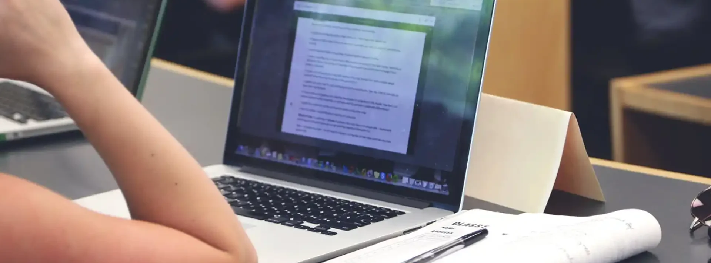
This collection brings together three online course-development engagements across Broward College, New York University, and edX. Each required a different approach: building complete courses independently, adapting one learning vision across two platforms, and recreating a highly social classroom experience asynchronously. Together, the projects show how I move between subject-matter expertise, faculty partnership, curriculum design, assessment, multimedia, and educational technology.
At a glance


 Broward College, NYU & edX2015–2020
Broward College, NYU & edX2015–2020Translate courses built around classroom interaction, disciplinary expertise, and distinct institutional requirements into effective online experiences.
Three different approaches shaped around each course: independent end-to-end development, dual-platform design, and the asynchronous recreation of a highly social classroom experience.
The work produced complete online courses, reusable learning activities, multimedia, assessments, and an award-winning course-development collaboration.
Together, these projects show how I move fluidly between subject-matter expertise, faculty partnership, instructional design, media, and educational technology.
Methods & tools: Curriculum architecture · Faculty collaboration · Multimedia · Assessment design · Canvas · edX · Qualtrics
Built two complete online French courses from a skeletal departmental syllabus, including structure, curated resources, original assessments, and animated instructional media.
French · Undergraduate General Education Requirement · Beginning French II
Serving as the faculty developer, SME, and instructor, I independently created both the French 1120 and 1121 online courses. Working with a skeletal departmental syllabus, I structured and curated the content, designed and wrote the assessments, and taught several sections of the course. I even created my own animated videos to cover content where existing materials were insufficient.
Scroll or swipe to explore more →
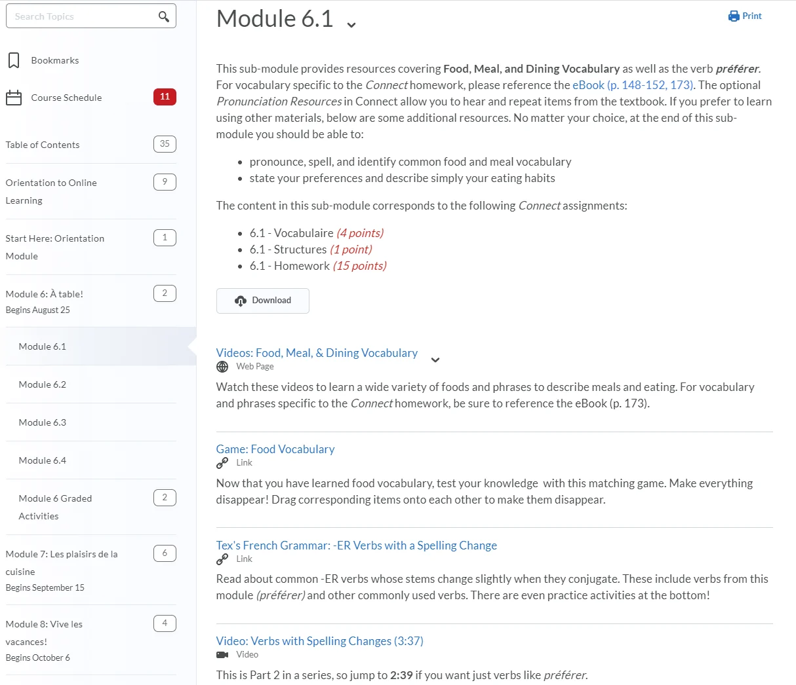
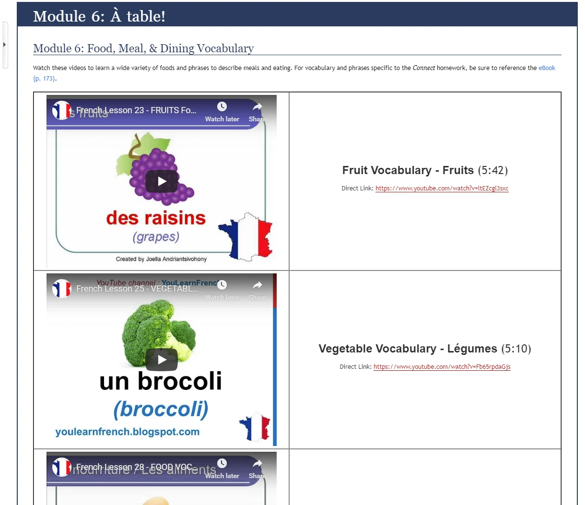
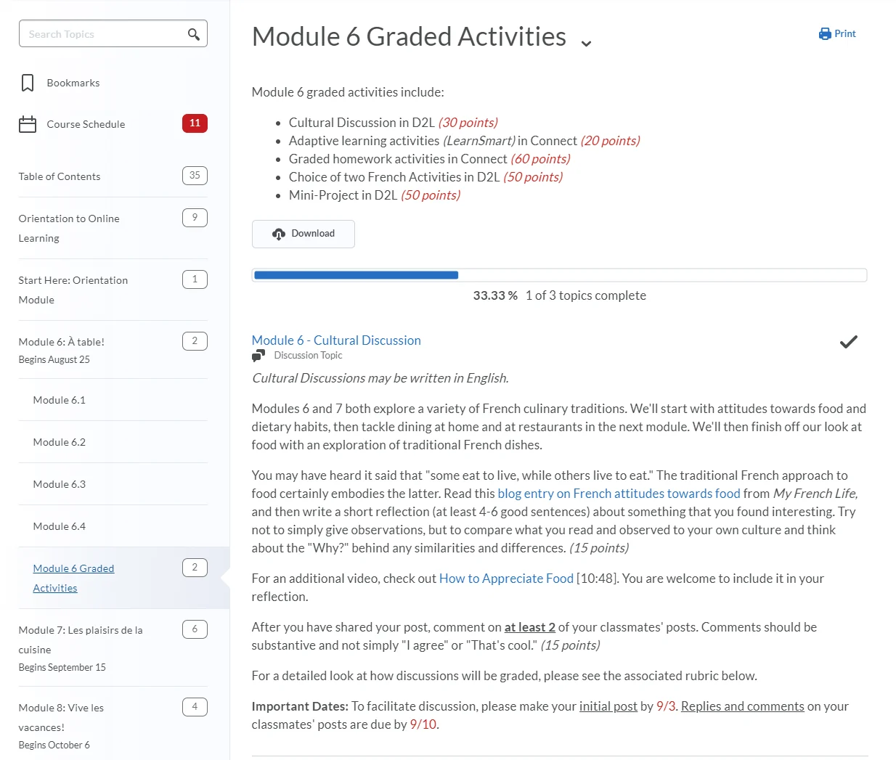
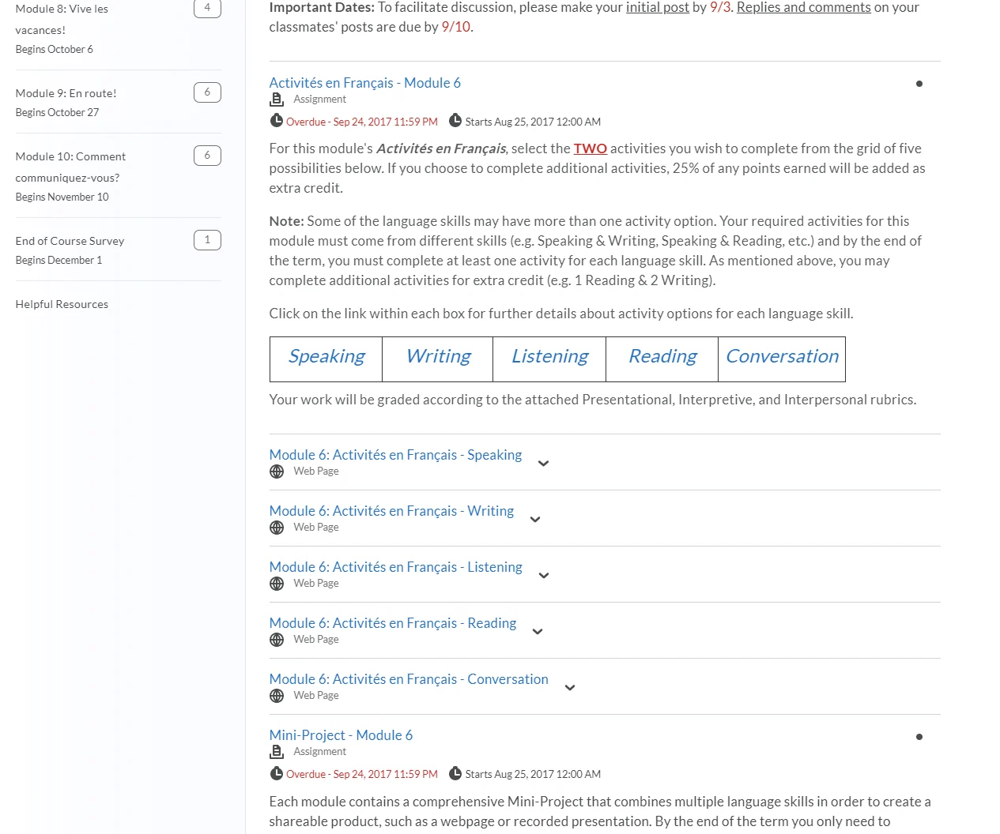
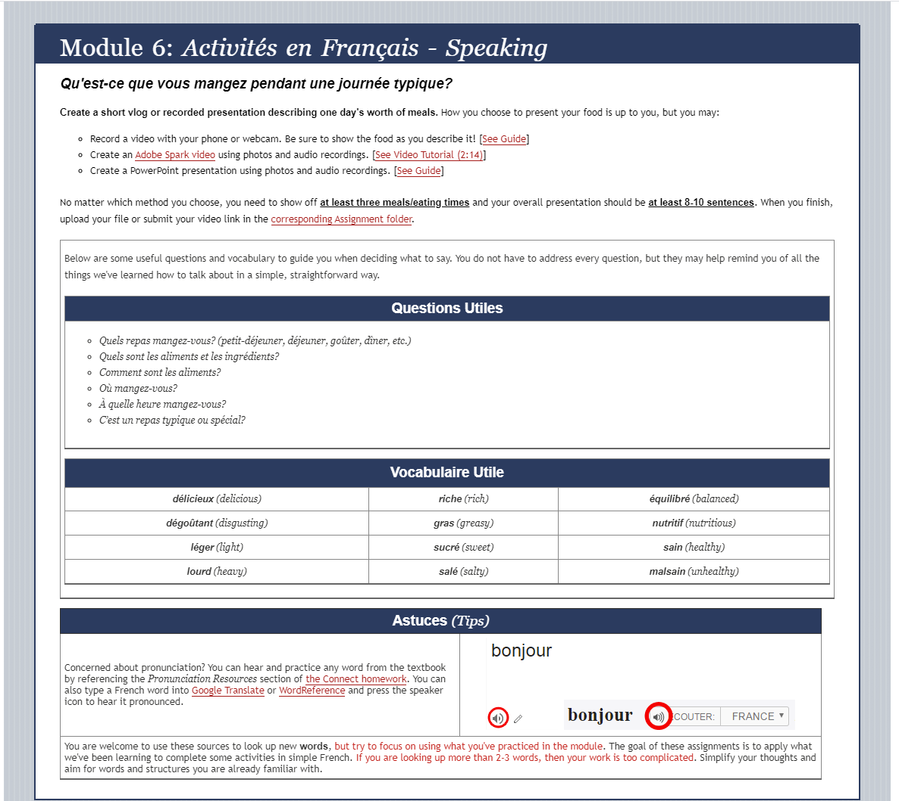
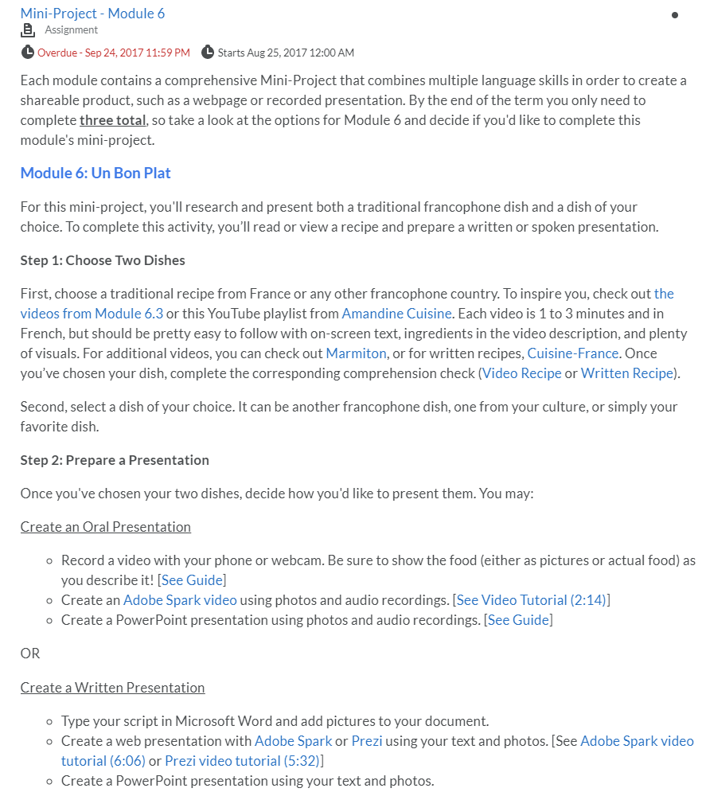
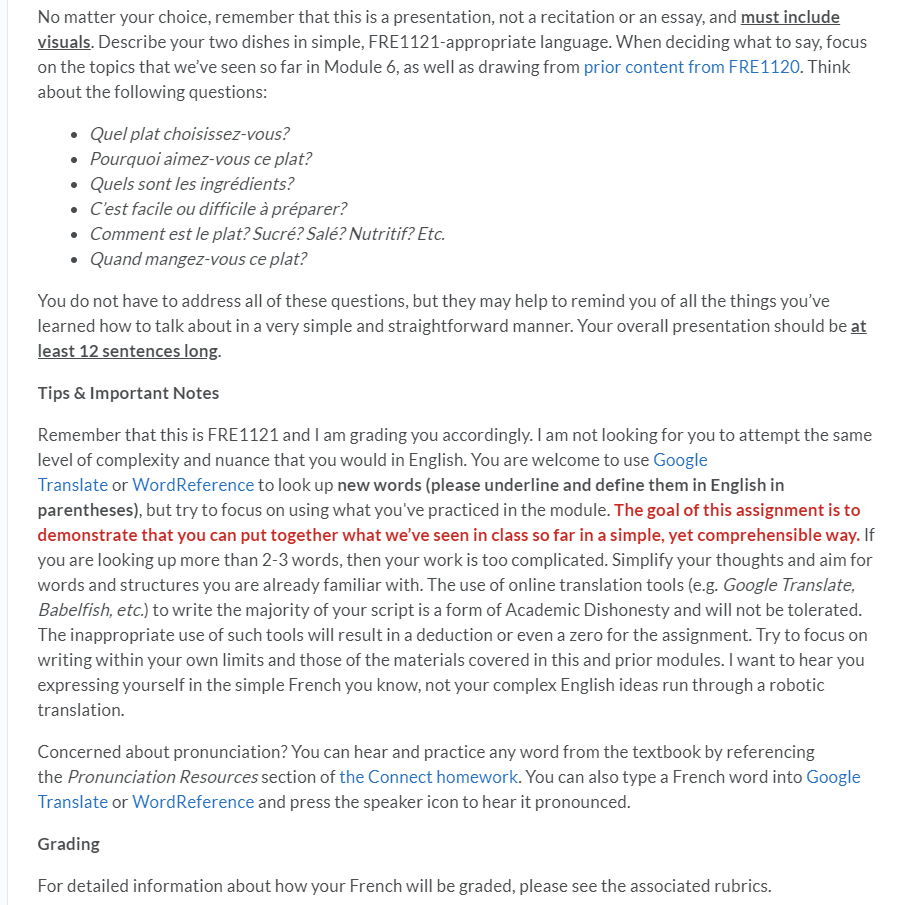
Developed parallel versions for an NYU master’s program and an edX MicroMasters, adapting creative projects and peer feedback to two different platforms and audiences.
Integrated Digital Media, MS · Theories of Media and Technology
This unique project required the simultaneous development of two different versions of the course—one for NYU’s online Masters in Integrated Digital Media, and the other as part of NYU’s MicroMasters partnership with edX. As instructional design lead, I collaborated with faculty developer Scott Fitzgerald to tailor the experience to each platform’s learners. I also developed supplemental module content, wrote discussion prompts, designed weekly “hook” activities, crafted the assignments and rubrics, and edited the course trailer.
The challenge lay in bringing creative projects and peer feedback to the more rigid edX platform. We used an open-ended assessment tool coupled with required peer assessment, allowing learners to submit a wide range of project types and provide constructive critiques through a shared rubric.
Scroll or swipe to explore more →
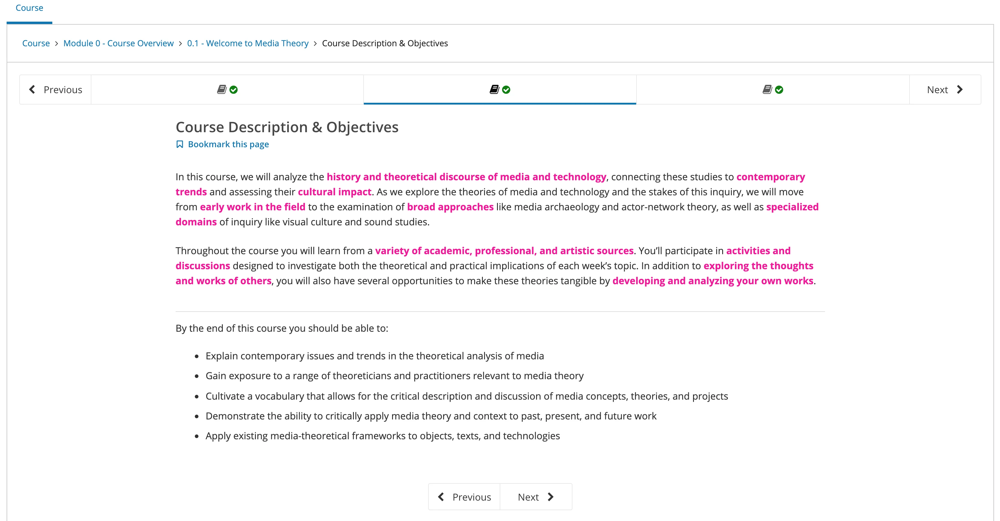
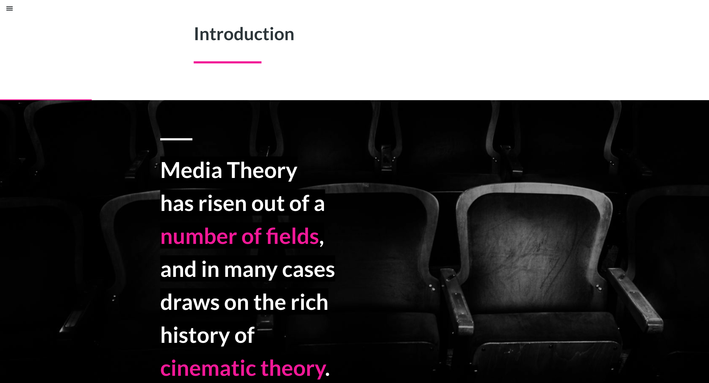
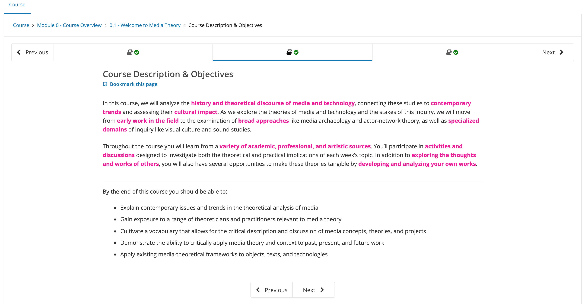
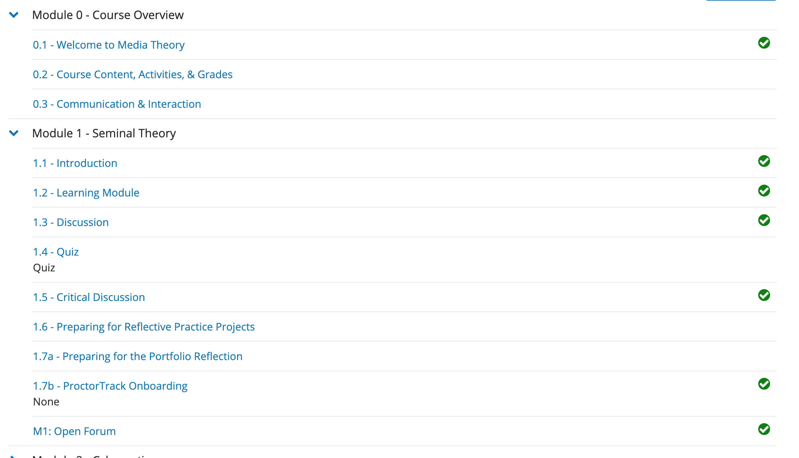
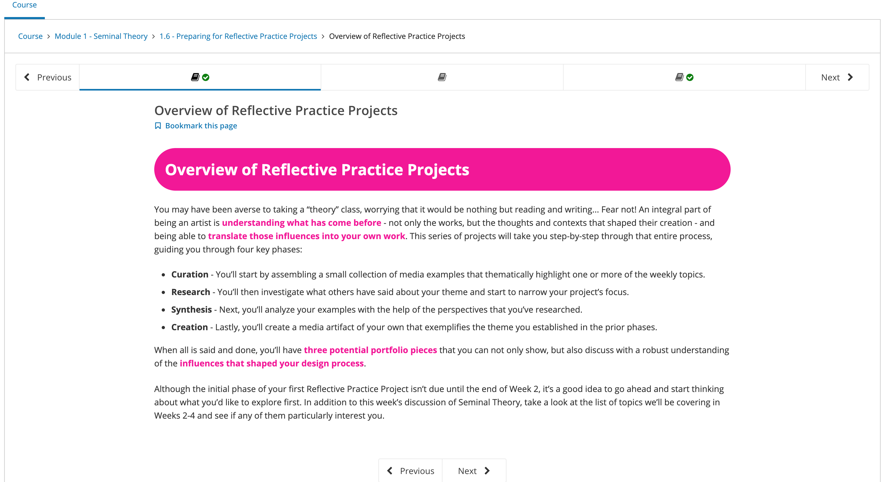
Helped translate a highly interactive face-to-face course into an asynchronous experience using community spaces, Qualtrics activities, polls, quizzes, and games.
Management of Technology, MS · Organizational Behavior
This was a particularly daunting development: the face-to-face course relied on team interaction, physical classroom activities, and real-time third-party tools. As educational technology lead, I worked with Anne-Laure Fayard and Jay Leibowitz to translate that engagement into a primarily asynchronous environment using Google Communities and imaginative applications of Qualtrics for polls, quizzes, and games.
Scroll or swipe to explore more →
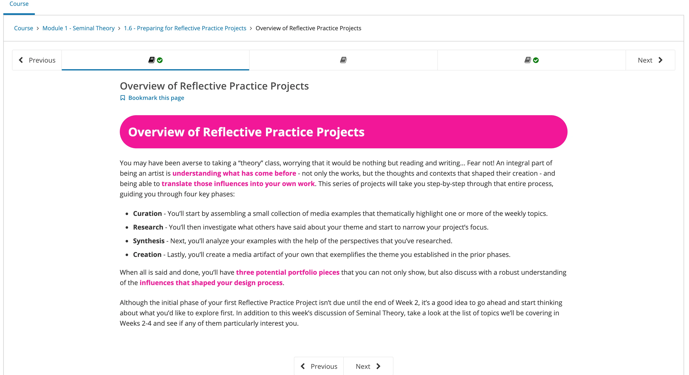